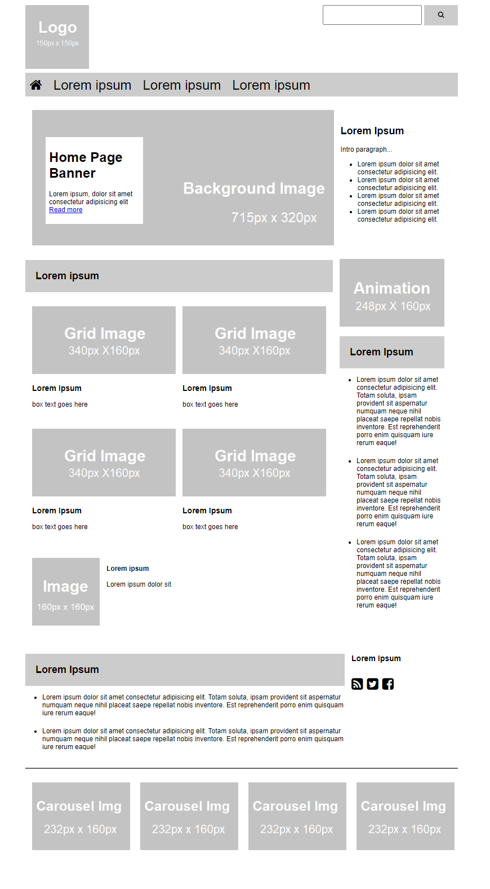

Week 07 Homework
Implement HTML/CSS to Build the Adjacent Layout
- Open file
/schedule/week-07/02/after-class/week07-homework-starter.zipfrom the class repo. - Update the HTML/CSS you find to add flexbox classes where you see
<!-- comments -->andclass="???"to complete the flexbox layout matching the .pdf file as closely as you can. The starter file already has classes in place an in internal style element for flexboxes in 2 sizes (flex: 3;andflex-1;) and flex-container (display: flex;). It's up to you to determine which classes to add on whichsection, div,andasideelements. - The starter file uses shaded box placeholder images.
- If you can, follow instructions here to get the Font Awesome stylesheet linked in your code, then use it to represent the search button icon, home link icon, and social media icons in the right column. It's acceptable to simply add a shaded box labeled 'social media icons' or similar in place of the
faicons. - Create a new folder in your personal GitHub repo for
week07-homework - Upload your new HTML and CSS files.
- View in GitHub Pages and work with your HTML and CSS until they visually resemble the
.pdffile. - Submit your HTML and CSS files to Blackboard along with your GitHub Pages URL.
